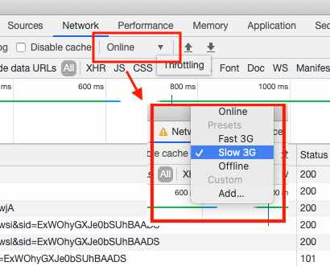

@see NetworkInformation API details and Browser compability table on MDN page.
| option | value | info |
|---|---|---|
| downlink | not supported | Returns the effective bandwidth estimate in megabits per second, rounded to the nearest multiple of 25 kilobits per seconds. |
| downlinkMax | not supported | Returns the maximum downlink speed, in megabits per second (Mbps), for the underlying connection technology. |
| effectiveType | not supported | Returns the effective type of the connection meaning one of 'slow-2g', '2g', '3g', or '4g'. This value is determined using a combination of recently observed round-trip time and downlink values. |
| rtt | not supported | Returns the estimated effective round-trip time of the current connection, rounded to the nearest multiple of 25 milliseconds. |
| saveData | not supported | Returns true if the user has set a reduced data usage option on the user agent. |
| type | not supported | Returns the type of connection a device is using to communicate with the network. It will be one of the following values: "bluetooth", "cellular", "ethernet", "none", "wifi", "wimax", "other", "unknown" |
| onchange | not supported | The event that's fired when connection information changes and the change is fired on this |
Throttle network speed from DevTools panel to update network connection log table.(@see helper picture below)
| * | effectiveType | rtt | downlink | saveData | speed change |
|---|
